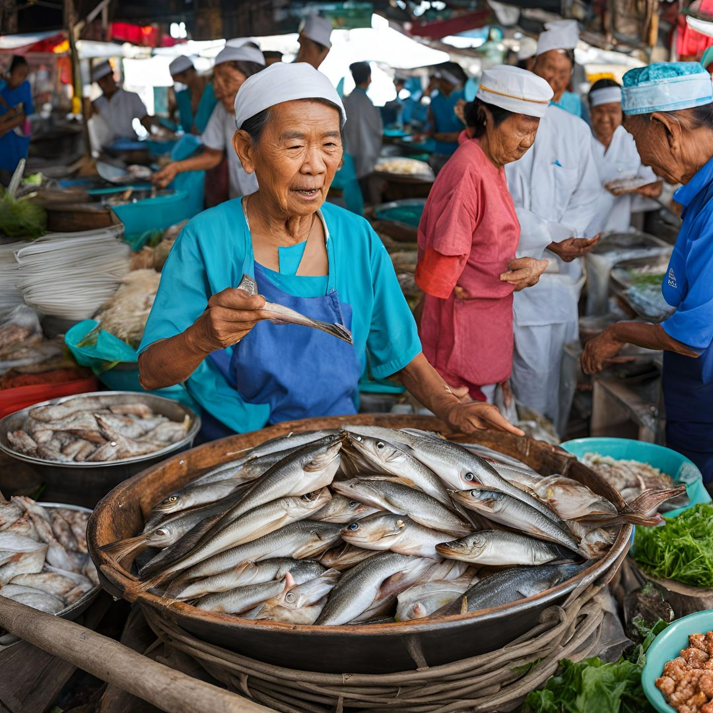

.jpg)
อาหารทะเลชลบุรี

จังหวัดชลบุรี เป็นหนึ่งในจังหวัดที่มีชื่อเสียงด้านการท่องเที่ยวและอาหารทะเลสดใหม่ ตั้งอยู่บนชายฝั่งทะเลภาคตะวันออกของประเทศไทย ชลบุรีไม่เพียงแต่มีหาดทรายขาวสวยงามและสถานที่ท่องเที่ยวที่ดึงดูดนักท่องเที่ยวมากมาย แต่ยังเป็นแหล่งรวมของอาหารทะเลที่มีชื่อเสียงไปทั่วประเทศ
ด้วยการเป็นจังหวัดที่ตั้งอยู่ติดทะเล วิถีชีวิตของชาวชลบุรีจึงผูกพันกับท้องทะเลและการทำประมง ชาวประมงที่นี่มีความชำนาญในการจับปลาหมึก กุ้ง และปลา ซึ่งถูกนำมาผลิตเป็นอาหารทะเลแปรรูปหลากหลายชนิด เช่น ปลาหมึกแห้ง กุ้งแห้ง และปลาเค็ม ที่เป็นที่นิยมในหมู่นักท่องเที่ยวและผู้ที่ชื่นชอบอาหารทะเล
เว็ปไซต์ของเรามีเป้าหมายในการ ส่งรายได้คืนกลับสู่ชาวประมงให้มีชีวิตที่ดีขึ้นและมีศักยภาพในการเพิ่มคุณภาพและมูลค่าของประมงไทยให้มาตฐานสูงขึ้น โดยเป็นสื่อการในการขายสินค้าOTOP อาหารทะเลแท้ๆที่มาจากชาวประมง
.jpg)
สินค้าของดีจากประมงไทยที่อยากให้คนไทยลอง
ปลาหมึกแห้งคุณภาพสูงที่ผ่านการอบอย่างพิถีพิถัน รสชาติกลมกล่อม เหมาะสำหรับทานเล่นหรือเป็นส่วนประกอบของอาหารจานหลัก
หมึกหนุบที่มีรสชาติกลมกล่อม เหมาะสำหรับเป็นของว่างหรือส่วนประกอบในการทำอาหาร รสชาติอร่อยโดดเด่น
น้ำปลาหมึกสูตรพิเศษที่ทำจากปลาหมึกสดใหม่ เพิ่มความอร่อยให้กับอาหารของคุณด้วยรสชาติกลมกล่อมและกลิ่นหอม
กุ้งแห้งที่คัดสรรจากกุ้งสดใหม่ อบจนกรอบและมีกลิ่นหอม สามารถใช้เป็นของว่างหรือเพิ่มรสชาติให้กับอาหาร
.jpg)
กุ้งขาวดองน้ำปลา สูตรเด็ด รสชาติกลมกล่อมที่พร้อมเติมเต็มความอร่อยให้กับมื้ออาหารของคุณ
น้ำพริกกุ้งตาแดงที่มีรสชาติเผ็ดร้อนกลมกล่อม เหมาะสำหรับทานคู่กับข้าวสวยหรือผักสด
ปลากะตักตากแห้งที่ทำจากปลาสดใหม่ ผ่านกระบวนการแห้งที่รักษารสชาติและคุณค่าทางโภชนาการ
ปลาเข็มตากแห้งที่คัดสรรอย่างดี มีรสชาติอร่อยและสามารถใช้เป็นอาหารหรือเป็นของฝาก
ปลาลิ้นหมาตากแห้งที่มีรสชาติอร่อยและเนื้อสัมผัสที่ยอดเยี่ยม เหมาะสำหรับการใช้ในการปรุงอาหาร
.jpg)
ในโลกที่เร่งรีบและเปลี่ยนแปลงอย่างรวดเร็วนี้ การได้สัมผัสกับผลิตภัณฑ์ที่มีคุณภาพจากแหล่งผลิตท้องถิ่นถือเป็นสิ่งที่มีค่ามากขึ้น ทุกผลิตภัณฑ์ OTOP ที่เรานำเสนอในเว็บไซต์นี้ ไม่เพียงแต่เป็นผลิตภัณฑ์ที่ผ่านการคัดสรรและตรวจสอบอย่างพิถีพิถันเท่านั้น แต่ยังเป็นตัวแทนของฝีมือและความตั้งใจของชาวประมงไทยที่มุ่งมั่นในการสร้างสรรค์สิ่งดี ๆ ให้กับลูกค้าทุกท่าน เราภูมิใจที่ได้สนับสนุนและร่วมมือกับชาวประมงไทยที่อุทิศตนในการรักษาคุณภาพของอาหารทะเลและการสร้างสรรค์ผลิตภัณฑ์ OTOP ที่โดดเด่น คุณสามารถมั่นใจได้ว่าทุกคำสั่งซื้อที่คุณทำคือการสนับสนุนวิถีชีวิตของชุมชนและเศรษฐกิจท้องถิ่นของเรา ขอขอบคุณที่ให้ความสนใจในผลิตภัณฑ์ของเรา และเราหวังว่าคุณจะได้พบกับประสบการณ์ที่ยอดเยี่ยมจากการเลือกซื้อสินค้าของดีจากทะเลไทย หากคุณมีข้อสงสัยหรือคำแนะนำเพิ่มเติม อย่าลังเลที่จะติดต่อเรา เราพร้อมที่จะให้บริการและตอบสนองทุกความต้องการของคุณเสมอ ร่วมเป็นส่วนหนึ่งในการสนับสนุนชาวประมงไทยและเพลิดเพลินไปกับผลิตภัณฑ์ที่มีคุณภาพวันนี้!